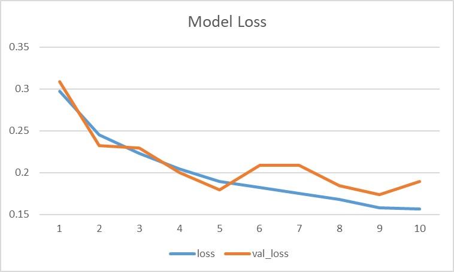
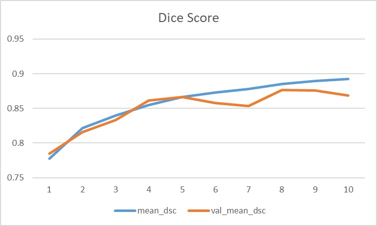

Cats & Dogs Image Segmentation (M-Net)

고양이 사진에 적용된 M-Net 모델의 이미지 Segmentation 결과
개요
M-Net 모델을 구현하여 강아지 , 고양이 이미지에 대한 Segmentation.
채널을 많이 연결해서 , 역전파가 잘 되게 하는 구조
Loss function은 Categorical Crossentropy 와 Dice coefficient 를 같이 적용
Dice coefficient 에는 1-score 로 적용 결과와 ,-ln(score) 로 적용한 결과 비교
AR환경에서 사용자 제스쳐를 위한 사용자의 손 검출기를 제작하고자 함.

M-Net 모델 Network
결과
적절한 Segmentation이 이루어졌음.
loss function의 결과, Dice coefficient에 1-score과 -ln(score) 큰 차이를 보기 어려움.

Loss Graph (x-epoch, y-loss)
Dice Score Graph (x-epoch, y-score)
구축환경 및 소스 코드
Open Framework: Tensorflow
Train image: 877, Test image: 46
Source: GitHub: l-socre
Source: GitHub: -ln(socre)